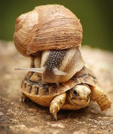

Cítíš stres? Máš termíny? Nestíháš a je toho opravdu moc? Tlačí na tebe z několika stran? Potřebuješ zařídit čtyřicet věcí a večer odpadáváš do postele úplně vyčerpaný a unavený? Nebo tě prostě jenom štve, že nemáš moc času na sebe, na blízké, na to, co máš rád? Pozastavuješ se nad tím, jak ti dny utíkají bleskovým tempem? Zpomal!
Začínám přicházet na chuť zpomalování. Například teď mi tento koncept, vyjma kryptografie, pomohl se všemi zkouškami a pomáhá i při učení na čtvrteční státnice. Nevím, jestli to začalo poslechem reggae před pár lety nebo objevováním chilloutu při učení, ale nejspíš ani jedním. Nejspíš to je jednoduše tím, že jsem se musel na konci gymplu a celou vysokou školu dost otáčet a snažit se vydělat si nějakým způsobem na živobytí, takže jsem neměl takovou tu slavnou studentskou pohodu, ale naopak, často mě stihl docela silný stres. Dohromady s náročnou školou docházelo k vypjatým situacím a nejednou jsem nespal déle než hodinu i několik nocí za sebou. Možná to znáte - zkoušky, termíny v práci, klienti, do toho soužití se spolubydlícími a snaha zachovat ve svém životě místo i pro nějakou zábavu...
Jako studentské ucho jsem si myslel, že dobytí světa spočívá ve svědomitém plnění všeho co druhým vidím na očích. Když tedy klient zavelel, že něco musí být do pátku, tak se prostě jelo přes noc. Když čekali Estonci na nějakou novou funkci v systému, programovalo se těsně před "dovolenou" několik dní v kuse. (Dovolená je v uvozovkách, protože je to dost nevolnické označení pro výjezd studenta na volné noze do rumunských hor.) Před odjezdem z Erasmu jsem dokonce několik nocí dodělával části nějakého projektu, abych si přes den mohl ještě užívat poslední chvíle pobytu.
Jaká byla však realita? Hádejte. S modulem, který musel být nutně před mým odjezdem do Rumunska, nikdo nehnul do doby, než jsem se vrátil. Ležel tam deset dní hotový, stačilo jej pouze nasadit! Najednou to mohlo to počkat? A ten projekt, co jsem dodělával po nocích na Erasmu, ten nikdy nespatřil světlo světa a dokonce jsem za něj dodnes nedostal plně zaplaceno. Ještě že jsem typem člověka, který se nesmíří s opportunity cost a chce vše. Zabral jsem, vykonal jsem nemožné třeba v noci, abych si užil život přes den - nesmířil jsem se s tím, že bych jinak musel jen sedět nad prací a můj pravý život by úplně ostrouhal. Nelituju toho, že jsem zabral, protože jsem díky tomu nepřišel o pravé zážitky, třeba spatření živého soba na ostrově Hailuoto. Čeho ale lituju? Toho, že mi to celé nedošlo už tehdy a na tu práci jsem se prostě nevykašlal.
Takovýchto pár zkušeností mě naučilo, že nic se nejí tak horké, jak se to uvaří. Ani celonoční učení na zkoušku nemívalo často požadovaný efekt a člověk si akorát zblbnul tělo a psychiku. Na jedné z takových zkoušek jsem dokonce regulérně usínal (a za rok jsem si ji zopakoval). Co z toho mám? Jsem vystresovaný, unavený, nemám na nic čas a často z toho nemám nějaký výrazný užitek ani já, ani druhá strana.
Od těchto dob inklinuji k tomu věci zlehčovat, zbržďovat, zpomalovat. Zní to podivně a třeba mě po tomto článku nikdo nikdy už nezaměstná, ale je to tak - už prostě nenechám školu ani práci zasahovat do svého života víc, než by mělo být zdrávo. Všechno má své hranice a nic není prostě tak strašně důležité a nekompromisní, abych si kvůli tomu musel trhat žíly. Tedy jsou takové věci, ale v 90 % případů se netýkají ani práce, ani školy. Nejsem holt už ochoten kopat za něčí tým ve dne v noci několik dní v kuse. Bohužel, ten pravý - můj vlastní - život má pro mě větší hodnotu, vyšší prioritu.
Koukněte na dvacetiminutovou a celkem vtipnou přednášku o zpomalování od Carla Honoré (jsou tam i české titulky):
Krásnou ukázkou zpomalení v praxi pro ty, kteří této cestě nevěří, je nemoc. Posledně jsem si to střihnul když jsme se v únoru stěhovali. Musel jsem zařídit dvacet věcí denně, běhal jsem mezi školou, prací, stěhováním, ještě jsem měl jet někam do Prahy prezentovat aplikaci na AppParade. A lup, prásk, zničeho nic jsem se zhroutil. Smetla mě nějaká střevní chřipka, svíjel jsem se na posteli v bolestech břicha a musel jsem všechno posunout nebo zrušit. Byl to zvláštní pocit - ještě před několika hodinami jsem byl uprostřed víru nesmírně urgentních a důležitých věcí... a teď jsem ležel přikrytý peřinou v prázdném pokoji, bylo tam ticho a nečekalo mě nic, mým úkolem bylo jen spát. Vše bylo zrušeno a odloženo a světe div se - vůbec to nevadilo. Nic se nezkazilo, nikde se svět nezbořil, nakonec se stejně vše povedlo (teda až na tu AppParade, ale tam pojedeme třeba na podzim).
Jak ale zpomalit přirozeně, bez chřipek? Je to jednoduché. Ve chvíli, kdy cítíte tlak nebo nabývající stres, učiňte přesný opak toho, na co jste zvyklí - nepřidávejte na tempu, ale zvolněte. Pusťte si to reggae, jděte normálně spát, klientovi se normálně omluvte. Místo učení do noci si raději zajeďte do Kohoutovic na bazén (otevřeno do 22:00) a zrelaxujte ve vodě a v páře. Dbejte na spánek, odpočinek. Dělejte si přestávky. Dělejte míň věcí, ale pořádně. Zpomalte. Usmějte se. Je to pro váš lepší život. Pro veselejší den, šťastnější okolí, sluníčkovější vstávání. Když se něco podělá? No a co? Je až krajně nepravděpodobné, že se něco podělá nenávratně, že to nepůjde spravit. A jak řekl nebožtík John Wooden:
Někdy můžeš prohrát i pokud někoho porazíš a klidně pro tebe může být nakonec výhrou, když s někým prohraješ.
Možná přijdete o zakázku nekompromisního klienta. Bude to však tak zásadní pro váš život? Nenahradíte ho nakonec někým mnohem lepším, kdo si vás váží? Klient vás ale stejně spíš pochopí, domluvíte se. Jste lidi. Naučte zákazníky a své zaměstnavatele, že vaší prioritou je především váš život a ne práce, naučte je respektovat vás jako lidské bytosti. Samozřejmě se tak musíte umět repsektovat nejdříve vy sami. Raději řekněte, že daný termín nemůžete slíbit, protože byste museli pracovat ve velkém stresu a tím by utrpěla kvalita práce. A takto nekvalitní práci si vy nemůžete klientovi vůbec dovolit předat, je to pod vaši úroveň, to raději zakázku nevezmete.
A co škola? Možná projedete zkoušku, ale spíš budete lépe vyspaní a bude vám to s tužkou a papírem svižněji zapalovat. Odpočinutý mozek reaguje mnohonásobně výkonněji, než když do něj do poslední chvíle bušíte nová fakta a zalíváte je energiťákem. A co si budeme vykládat, když si pozorně přečtete důvody, proč jsem odešel z FITu na FI, je za tím taky hlavně zpomalení a zvolnění.
Snad jsem vás tímto dlouhým článkem trochu navnadil zamyslet se nad tím, jak rychlý máte život, jestli tak rychlý musí být a jestli v něm nemůžete eliminovat velkou část stresu. Věřte mi, já to znám. Říkáte si, že až doděláte tenhle projekt a předáte klientovi, nebo že až dáte tuhle protivnou zkoušku, že bude klid a vše se urovná. Ale není to tak. Budou nové projekty, nové důvody pro to hnát se, běžet nějaký kousek vašeho krysího závodu. Musíte změnit přístup, jinak se nevymaníte. Jestli je pro vás těžké zamýšlet se kam běžíte a proč, zkuste se alespoň sami sebe zeptat, jestli nemůžete místo běhu aspoň jenom kráčet.
 Kindle
Kindle